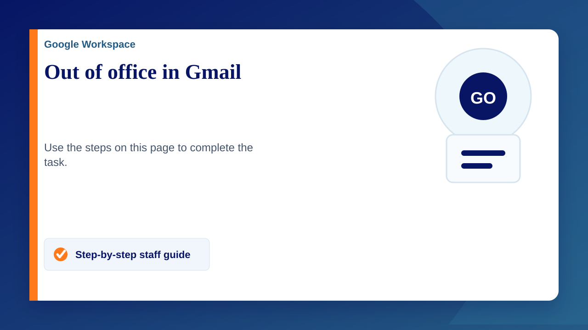

Set up your Out of Office AutoReply
- On your computer, open Gmail.
- In the top right, click Settings Settings and then See all settings.
- Scroll down to the 'Out of Office AutoReply' section.
- Select Out of Office AutoReply on.
- Fill in the date range, subject and message.
- Under your message, tick the box if you only want your contacts to see your Out of Office reply.
- At the bottom of the page, click Save changes.
Note: If you have a Gmail signature , it will be shown at the bottom of your out of office reply.
Turn off your Out of Office AutoReply
When your Out of Office AutoReply is on, you'll see a banner across the top of your inbox that shows the subject of your Out of Office response.
- To turn off your Out of Office response, click End now.
When your Out of Office AutoReply is sent
Your Out of Office AutoReply starts at 12:00 am on the start date and ends at 11:59 pm on the end date, unless you end it earlier.
In most cases, your Out of Office AutoReply is only sent to people the first time that they message you.
Here are the occasions when someone may see your Out of Office AutoReply more than once:
- If the same person contacts you again four days later and your Out of Office AutoReply is still on, they'll see your Out of Office AutoReply again.
- Your Out of Office AutoReply restarts each time you edit it. If someone receives your initial Out of Office AutoReply, then emails you again after you've edited it, they'll see your new response.
- If you use Gmail through your work, school/university or other organisation, you can choose whether your response is sent to everyone or only to people in your organisation.
Tip: Messages sent to your spam folder and messages addressed to a mailing list that you subscribe to won't get your holiday response.